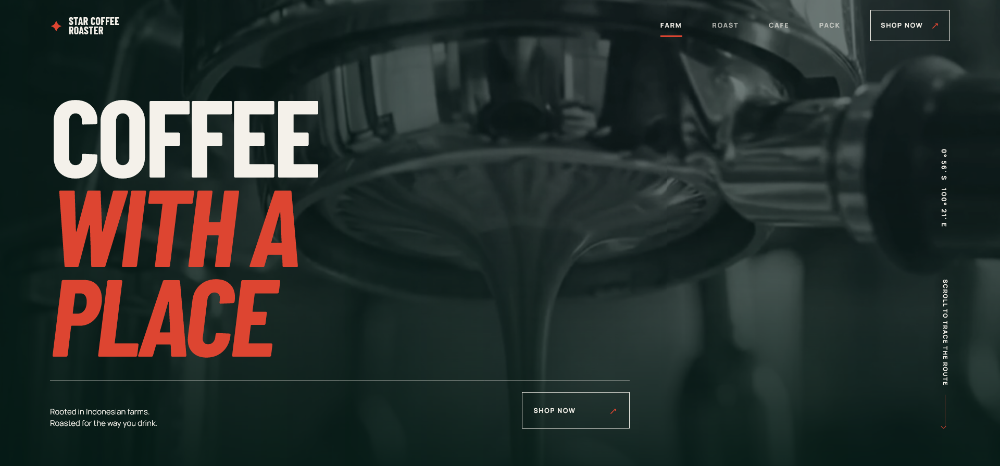

FRONT-END · AGENTIC AI
Coffee Roastery — Landing Page
A landing page for a coffee roastery, built with Vite and Vue and deployed on Vercel. Developed using agentic AI tooling from start to finish.
VITE · VUE · VERCEL View live site